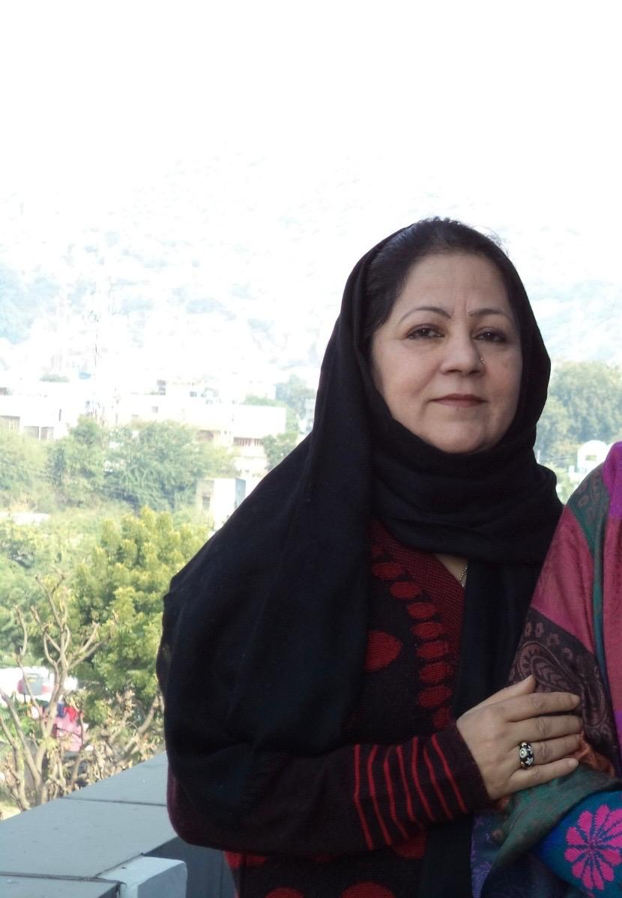
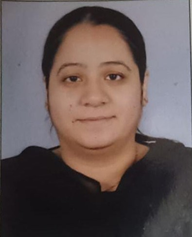

Compassion • Integrity • Empowerment

AFTAB Women Welfare Society is a non-profit organization driven by compassion and a strong desire to bring social change. Established with the vision of creating an equitable society, we work on the ground level to identify and assist women and girls who lack access to basic resources.
We firmly believe that empowering women is the foundation of a strong society. When a woman is educated and self-reliant, she empowers her entire family and community. We operate with complete transparency, aiming to be a bridge between donors who want to help and the women who need it most.

Aftab Khala was a kind-hearted and visionary woman who devoted her life to the welfare and empowerment of women. With deep compassion and a strong sense of responsibility toward society, she founded the Aftab Women Welfare Society in 2015 to support women in need and help them build a better future.
Although she is no longer with us, her spirit, dedication, and mission continue to guide our work. Her dreams live on through every life we touch, and we remain committed to carrying forward her legacy with the same passion and sincerity that she showed.

My name is Adila Nasir, and I am the treasurer of this organization. I contribute with my professional background as an experienced teacher, bringing years of involvement in education and mentoring to support our initiatives—especially those focused on learning, guidance, and personal development for women and girls.
I strongly believe that education is a powerful tool for social change and women’s empowerment. Together, we strive to build a more inclusive and equitable society where every woman is respected, informed, and empowered.

Nafisa Aunty is the senior-most and guiding force of our NGO. As an elder and mentor, she has always been a source of inspiration for all of us. Her life has been deeply rooted in service to the community, especially for the upliftment and empowerment of women.
She has made remarkable contributions to the Khadim community by providing skill training to nearly 70–80 girls. She ran her own training center where she personally taught tailoring, painting, embroidery, and various vocational skills, enabling young women to become self-reliant and confident.
Having no daughter of her own, she considers the girls of the community as her own children. With this heartfelt belief, she has selflessly shared her skills and knowledge, nurturing many young women with care, patience, and dedication, just like a mother would.

Tabbasum has been associated with our NGO for the past eight years, serving with dedication, sincerity, and a strong sense of responsibility. She made significant contributions during the CA and NRC initiatives by working at the grassroots level, spreading awareness, and supporting the community effectively.
She also played an important role in the establishment and management of the clinic under the Aftab Women Welfare Society. Regardless of the difficulties, she has always carried out her responsibilities with honesty and perseverance.
In recognition of her experience, efficiency, and long-standing commitment to the organization, she serves as the Secretary, continuing to play a key role in taking the NGO to greater heights.
AFTAB Women Welfare Society was established with a small team aiming to teach street children.
Distributed over 10,000 food packets and hygiene kits to women in rural areas.
Now working in 5+ districts, focusing on legal rights awareness and higher education.